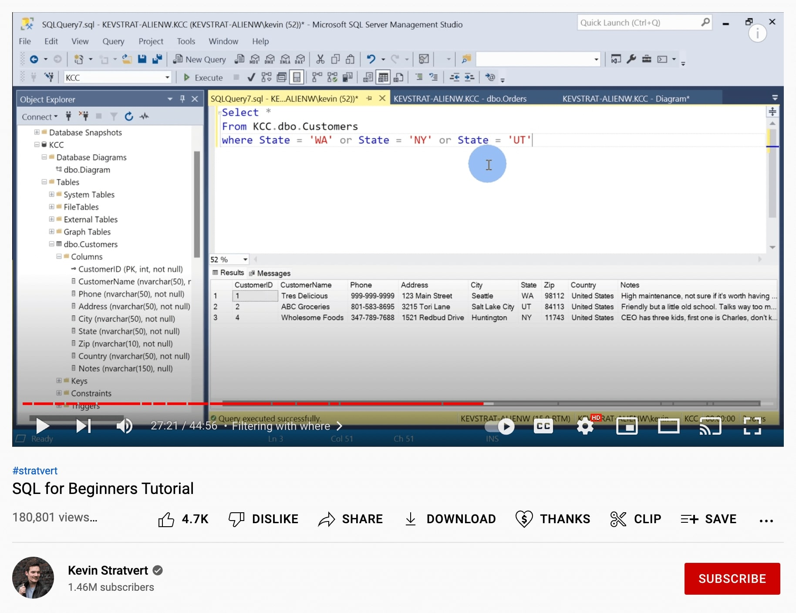
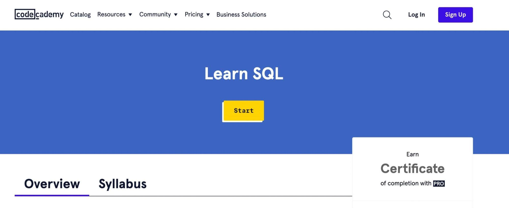

SQL, short for Structured Query Language, is the standard language for communicating with
relational
databases.
It's a relatively simple language as far as coding goes, but it's also incredibly powerful.
Structured query language (SQL) is a popular query language that is frequently used in all types of applications. Data analysts and developers learn and use SQL because it integrates well with different programming languages. For example, they can embed SQL queries with the Java programming language to build high-performing data processing applications with major SQL database systems such as Oracle or MS SQL Server. SQL is also fairly easy to learn as it uses common English keywords in its statements
In our data-hungry world, the ability to successfully work with data is becoming more and more
valuable. It's an in-demand skill and not just for data analysts. Financial teams, programmers,
and
even non-technical people in marketing, sales, and other functions can all benefit from
understanding what it takes to extract the data they need from a large database.
You don't necessarily need to become a SQL all-star, but understanding the basics will teach you
how
to ask better data-related questions (at the very least).
• execute queries against a database
• retrieve data from a database
• insert records in a database
• update records in a database
• delete records from a database
• create new databases
• create new tables in a database
• can create stored procedures in a database
• can create views in a database
• can set permissions on tables, procedures, and views
Structured query language (SQL) commands are specific keywords or SQL statements that developers
use
to manipulate the data stored in a relational database. You can categorize SQL commands as
follows.
Data definition language
Data definition language (DDL) refers to SQL commands that design the database structure.
Database
engineers use DDL to create and modify database objects based on the business requirements. For
example, the database engineer uses the CREATE command to create database objects such as
tables,
views, and indexes.
Data query language
Data query language (DQL) consists of instructions for retrieving data stored in relational
databases. Software applications use the SELECT command to filter and return specific results
from a
SQL table.
Data manipulation language
Data manipulation language (DML) statements write new information or modify existing records in
a
relational database. For example, an application uses the INSERT command to store a new record
in
the database.
Data control language
Database administrators use data control language (DCL) to manage or authorize database access
for
other users. For example, they can use the GRANT command to permit certain applications to
manipulate one or more tables.
Transaction control language
The relational engine uses transaction control language (TCL) to automatically make database
changes. For example, the database uses the ROLLBACK command to undo an erroneous transaction.
How to Learn SQL (3 Methods)
There are plenty of online resources that you can use to learn SQL. Let’s look at some effective ways to master this language.
If you’re looking to learn SQL as fast as possible, YouTube is a great place to start. Rather than
completing a lengthy course, you can find a tutorial that simplifies the language into its core
concepts.
For example, the SQL for Beginners Tutorial
will
teach you how to retrieve data from a database:

Learn SQL for beginners course on YouTube
In this 45-minute video, you’ll learn the basics of SQL, databases, and Relational Database Management
Systems. The creator will walk you through installing Microsoft SQL Server and SQL Server Management
Studio.
Using these free tools, you can familiarize yourself with tables, primary keys, data types, and more.
Some people prefer structured courses. Fortunately, there are many e-learning materials that focus on
the
fundamentals. By completing untimed modules, you can become an SQL developer at your own pace.
One of the best platforms to learn coding skills is Codecademy. After you create an account, you can
look
for beginner courses such as Learn SQL. This
course
will teach you how to use SQL to communicate with
relational databases:

In each module, you’ll be able to enter commands, run queries, and use functions to perform database
operations:
In most cases, you won't need a college degree to work with SQL. However, you might want to showcase
your
coding skills on your resume. When looking for a position that requires knowledge of SQL, having a
certification can increase your chances of getting hired.
Fortunately, you can easily gain a SQL certification online. Coursera’s Introduction to Structured Query
Language teaches you how to create a MySQL database. Once you complete the course, you’ll
receive a
certificate:
Keep in mind that this is the second level in the Web Applications for Everybody Specialization. To get
up
to speed, you’ll have to first take the Building Web Applications in PHP course. If you’re already
familiar
with PHP, HTML, and CSS, feel free to sign up for the SQL lessons.
Best Free SQL courses
These days, it’s not just data engineers who need to know SQL.
As relational databases continue to proliferate across various fields, such as marketing and sales, a
new
cohort of professionals wants to learn SQL.
But there’s no need to shell out a bunch of money to learn these new skills. There are already plenty of
free SQL learning resources that can teach beginners everything they need to know about SQL.
Here are the best free online resources for learning SQL in 2024:
“Intro to SQL: Querying and managing data” by Khan Academy pairs video tutorials with interactive coding
challenges for a best-of-both worlds course.
Video lessons are shot at the command-line level, clearly demonstrating concepts in the code itself.
Frequent coding challenges reinforce the educational content with diverse problem sets.
This course is recommended for those who want to combine excellent visual lessons with interactive
coding
exercises .
SQLZoo is an interactive, Wiki-based tutorial that offers lessons and projects for beginners in SQL.
Students start with basic functions such as COUNT, SUM, and AVG, and end by building intermediate
projects.
The lessons center around interactive coding challenges that are meant to be self-explanatory. This is a
good resource for students who want to learn SQL through small, simple exercises.
Codecademy, a leading educational coding platform, offers a free course on SQL. The course is structured
as
a series of interactive coding tutorials that guide students from basic functionality to varied,
long-form
projects.
Codecademy’s deep reservoir of exercises, and the service’s sleek interface, make for a smooth learning
experience. Recommended for students who want more of a professional feel to the learning process.
Don't miss out
Sign up to stay updated on the latest in technology
We're committed to your privacy. RoadmapGuider uses the information you provide to us to contact you about our relevant content, products, and services. You may unsubscribe from these communications at any time.
 . Made with
. Made with
 by vedant yeotikar.
All rights reserved .
by vedant yeotikar.
All rights reserved .
Get in touch